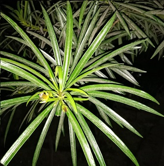
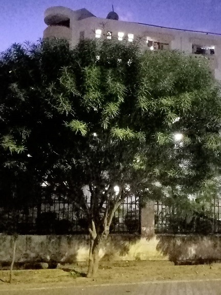

Yew Plum Pine
Scientific name = Podocarpus macrophyllus
It is a small to medium size evergreen tree, reaching 20 m tall. The leaves are strap-shaped, 6 - 12 cm long, and about 1 cm broad, with a central midrib.
The cones are borne on a short stem, and have 2-4 scales, usually only one (sometimes two) fertile, each fertile scale bearing a single apical seed 10 - 15 mm.
When mature, the scales swell up and become reddish purple, fleshy and berry-like, 10 - 20 mm long; they are then eaten by birds, which disperse the seeds
in their droppings.
Podocarpus macrophyllus occurs in forests, open thickets, and roadsides from near sea level to 1000 m.
They have also found their use in decorative purposes.